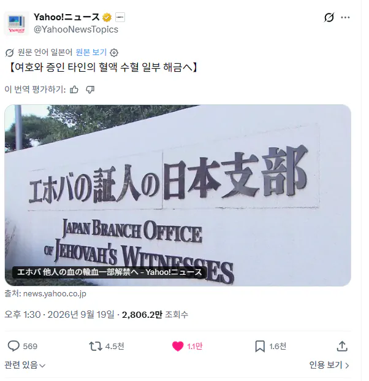

교단 고위층 늙은이들이 피 써야할때 되니까 개정ㅋㅋㅋ

교단 고위층 늙은이들이 피 써야할때 되니까 개정ㅋㅋㅋ
여증 통치체 이사진들이 바꿀 수 있음
일본은 에호바라고 하는구나 무슨 열대과일 이름같네
그냥죽지왜 바꾸냐 ㅋㅋ
회사에 한 명 있었는데, 엄청 피곤했다.
그냥 사람으로 보지 마라.
군대에서 일요일에 종교활동 가는데
불교, 원불교, 기독교, 천주교 다음에
미친놈 나와
하는 곳도 있었다고 들었음.
피해라...
ㅋ ㅋ ㅋ ㅋ ㅋ ㅋ ㅋ ㅋ ㅋ ㅋ ㅋ ㅋ ㅋ ㅋ ㅋ ㅋ ㅋ ㅋ ㅋ ㅋ
그래도 좋은소식이네
그 예전에도 애기들은 수혈받는거 어느수준까지는 허용한다 이런 단계는 있던걸로 알고있는데
나 고딩친구 지갑보면 보통 신분증 넣어두는 자리에 수혈금지 종이 들어있어서 맨날 빼보며 "야 시발 총도 쏘면 안되고 피도 받으면 안되는데 바카닉을 왜 그렇게 해대냐ㅋㅋㅋㅋ" 이지랄 하고 급식으로 순대나오면 "수혈 타임!"하며 내가 다 뺏어먹고 그랬는데
수혈타임 ㅇㅈㄹㅋㅋㅋㅋㅋㅋ
예전에는 장기 기증도 교리 때문에 못 받게 했음
근데 고위층 중에 장기 기증 필요한 높으신 분이 계셔서 교리 수정함
미친놈들아냨ㅋㅋㅋㅋ 목숨앞에져버릴거면 교리가 왜 교리여 ㅋㅋㅋ
여호와를 에호바라고 함?ㅋㅋㅋㅋㅋ 개웃기네
이병신들 아직도 살아있음?
일본살때 저새끼들 역앞에서 말 존나걸어서 개짜증났음
병신들
모태 여증이었는데 하지 말라는게 너무 많고 그냥 삶 자체를 죄책감 덩어리로 만들어버린다는걸 대학생때 깨달음. 친구들 생일은 당연하고 크리스마스 때 흔한 캐롤 흥얼거려도 죄책감 느껴야했으니...
한창 활발한 나이에 이성교제 조금만 삐끗해도 다 무시해버리는 징계 받는 언니오빠들 보며 무서워하고..
죽어서 낙원따윈 안 가도 되니 현생 그냥 행복하게 살겠다! 라는 마음으로 탈퇴하고 현재까지 아주 행복하게 잘 살고 있음.
대학 가서 머리 굵어지면 나처럼 탈주하는 사람들 많으니까 대학도 가지말라고 하는 분위기인데도 대학 꼭 가게 도와주신 부모님께 감사드림(지금은 온 가족 다 탈퇴함)
교리를 지멋대로 막 바꿔도 되는거야?